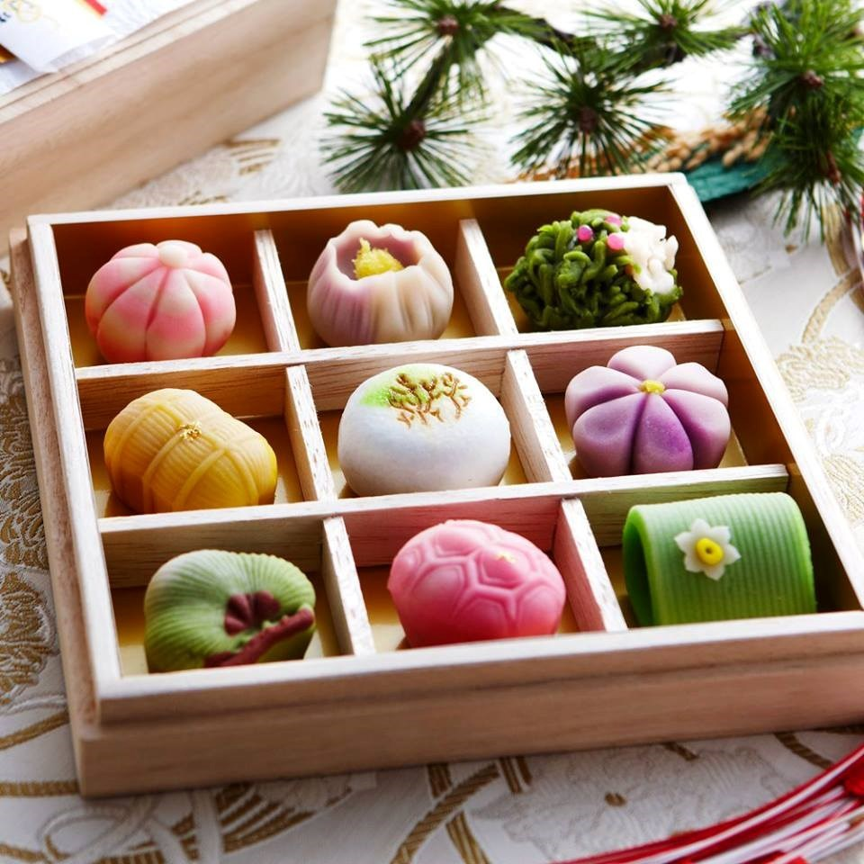

Ẩm thực Nhật Bản đặc trưng và độc đáo khiến cho các khách du lịch đến đây truy lùng và săn đón để thưởng thức. Trong số đó không thể không kể đến các loại bánh ngọt tuyệt vời này. Cùng Isa điểm danh những món bánh ngọt tuyệt đẹp đặc trưng cho ẩm thực tinh tế của Nhật Bản nha.
Nhắc đến bánh Mochi là người ta nhắc đến Nhật Bản. Mặc dù chỉ là loại bánh làm từ gạo nhưng loại bánh này lại khiến mọi người đều trầm trồ trước vẻ đẹp và vị ngon của nó. Mochi là loại bánh truyền thống của Nhật Bản làm từ một loại gạo đặc biệt có độ kết dính rất cao gọi là gạo mochi. Theo tương truyền của người Nhật, bánh mochi tượng trưng cho may mắn, thịnh vượng, thường được dùng trong những ngày sum họp gia đình, lễ tết hoặc gửi trao như món quà mang đến sự may mắn.
☛ Nguyên liệu và cách làm Bánh Mochi ☚
Tako nghĩa là bạch tuộc, còn từ yaki có nguồn gốc là từ yaku có nghĩa là chiên hoặc nướng. Takoyaki là một loại bánh nướng ăn nhẹ có hình tròn làm bằng bột mì với nhân bạch tuộc, nướng trong chảo takoyakiki. Nguyên liệu chính của món này là bột mì, bột dashi, bột tenkasu, trứng gà, hành chua, bắp cải, gừng và không thể thiếu bạch tuộc. Riêng phần bạch tuộc được luộc trước rồi cắt thành từng miếng nhỏ, khi ăn có cảm giác giòn, rất ngon. Takoyaki là món ăn đã trở thành biểu tượng của Osaka, thậm chí người dân nơi đây còn lập nên một bảo tàng về loại bánh này. Đến với bảo tàng, bạn sẽ thấy được quá trình hình thành, phát triển của Takoyaki qua từng thời kỳ lịch sử.
☛Nguyên liệu và cách làm Bánh Bạch tuộc ☚
Món bánh này còn có tên khác là bánh rán Doremon. Gắn liền với nhân vật hoạt hình đi cùng năm tháng của biết bao người Việt nên ngay khi mới xuất hiện ở Việt Nam, Dorayaki đã được chào đón nhiệt tình. Món bánh này gồm có hình tròn dẹt, gồm 2 lớp vỏ bánh tròn dẹt làm từ bột, phết mật ong, được nướng lên và bao lấy nhân thường làm từ đậu đỏ.

☛Nguyên liệu và cách làm bánh rán Doremon ☚
Taiyaki trong tiếng Nhật có nghĩa là “bánh nướng cá tráp”, một loại cá nước mặn rất thường xuất hiện trong các bữa ăn của người Nhật. Đúng như cái tên, Taiyaki nổi tiếng với hình dạng con cá cùng những vệt vẩy rõ nét trên thân bánh. Trong khi đó thì nhân bánh được làm từ mứt đậu đỏ, thơm và ngọt dịu cộng với cách thức chế biến khiến nó được coi là loại bánh anh em của Dorayaki.

☛Nguyên liệu và cách làm bánh cá nướng Taiyaki ☚
Wagashi có nghĩa là vẻ đẹp của thiên nhiên, trong tiếng Hán cái tên Wagashi được xem là “Hòa quả Tử”, do đó mỗi chiếc bánh đều được ví như một tiểu vũ trụ với sự tổng hòa của những yếu tố tươi đẹp nhất trong đất trời hội tụ. Thông thường bánh Wagashi sẽ được làm nhiều màu trong năm tương ứng với những mùa của thiên nhiên như: mùa hoa anh đào, hoa mơ, lá phong, bông tuyết…. Đặc biệt bánh có nhân đậu đỏ được tượng trưng cho ý nghĩa con người luôn đứng ở trung tâm đất trời vạn vật.
☛Nguyên liệu và cách làm Bánh Wagashi ☚
Sau khi đọc xong bài viết này bạn có cảm thấy khó cưỡng trước 6 món bánh Nhật Bản ngon tuyệt này không?
☙ ☙ ☙ ☙ ☙ ☘ ☙ ☙ ☙ ☙ ☙